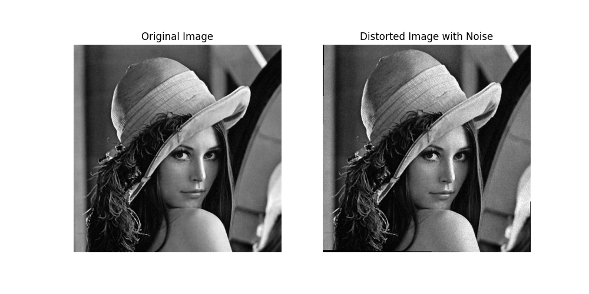
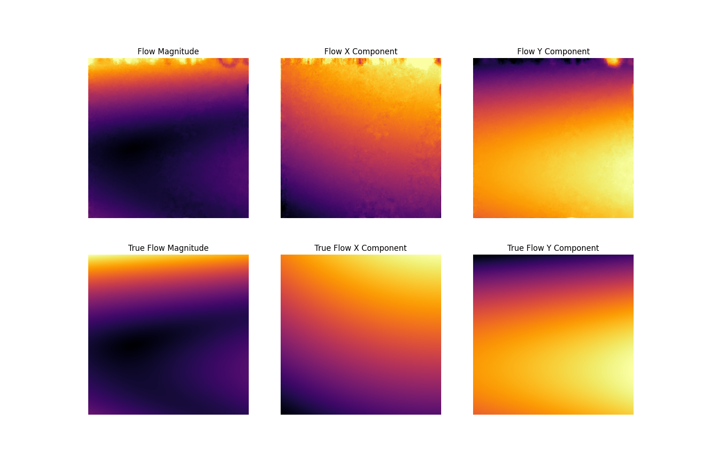

Note
Go to the end to download the full example code.
Optimizing distortion parameters with least squares#
This example illustrate how to use the optimize_parameters_least_squares function to optimize the distortion parameters of a camera model, which includes the intrinsic and distortion transformations.
See also
pycvcam.optimize_parameters_least_squares()for the function to optimize distortion parameters.pycvcam.optimize_camera_least_squares()for the function to optimize camera parameters (intrinsic, distortion, and extrinsic).pycvcam.optimize_chain_parameters_least_squares()for the function to optimize parameters of chains of transformations.
Optimizing Parameters to fit a Distortion model (Image Alignment)#
In this example, we consider a random image, an intrinsic matrix and a distortion model. We distort the image by the distortion model and then add noise.
The objective is to optimize the distortion parameters of the distortion model to fit the distorted image with noise.
To do this, we will compute the flow between the both images and then optimize the distortion parameters to minimize the flow in the normalized image space.
First create the images and compute the real flow between the original and distorted images.
import numpy
import pycvcam
import pycvcam.optimize as pycvopt
import cv2
import matplotlib.pyplot as plt
image = pycvcam.get_lena_image()
image_height, image_width = image.shape[:2]
print("Image shape:", image.shape)
pixel_points = numpy.indices((image_height, image_width), dtype=numpy.float64)
pixel_points = pixel_points.reshape(2, -1).T # shape (H*W, 2) WARNING: [H, W -> Y, X]
image_points = pixel_points[:, [1, 0]] # Swap to [X, Y] format
# Create an intrisic transformation
intrinsic = pycvcam.Cv2Intrinsic.from_matrix(
[[1000.0, 0.0, image_width / 2], [0.0, 1000.0, image_height / 2], [0.0, 0.0, 1.0]]
)
# Create a distortion transformation in the image space and convert it to the normalized image space
distortion = pycvcam.ZernikeDistortion(
parameters=[
0.8541972545746392,
-5.468596289790535,
-5.974287819021697,
14.292956075116104,
2.1403205479372627,
4.544169430137205,
-0.10099732464199339,
0.4363509204067417,
-0.5106374355681896,
-5.770087687650705,
-0.39147505788710696,
11.699411273002498,
] # In pixels units, example values for a small distortion
)
distortion.center = ((image_width - 1) / 2, (image_height - 1) / 2)
distortion.radius = numpy.sqrt(
(distortion.center[0]) ** 2 + (distortion.center[1]) ** 2
)
distortion.parameters_x = distortion.parameters_x / intrinsic.fx
distortion.parameters_y = distortion.parameters_y / intrinsic.fy
distortion.radius_x = distortion.radius_x / intrinsic.fx
distortion.radius_y = distortion.radius_y / intrinsic.fy
distortion.center_x = (distortion.center_x - intrinsic.cx) / intrinsic.fx
distortion.center_y = (distortion.center_y - intrinsic.cy) / intrinsic.fy
true_distorted_points = pycvcam.distort_points(
image_points, intrinsic, distortion, P=intrinsic
)
true_flow = true_distorted_points - image_points # shape (H*W, 2)
true_flow_magnitude = numpy.linalg.norm(true_flow, axis=1)
print("True flow magnitude statistics:")
print(" Min:", numpy.min(true_flow_magnitude))
print(" Max:", numpy.max(true_flow_magnitude))
print(" Mean:", numpy.mean(true_flow_magnitude))
print(" Median:", numpy.median(true_flow_magnitude))
print(" Std:", numpy.std(true_flow_magnitude))
# Create the distorted image with noise (5% of noise in the GL units)
distorted_image = pycvcam.distort_image(
image, intrinsic, distortion, interpolation="spline3"
)
noise_GLpc = 5.0
noise = numpy.random.normal(0, noise_GLpc / 100, distorted_image.shape)
distorted_image = distorted_image * (1 + noise) # Add multiplicative noise
distorted_image = numpy.clip(distorted_image, 0, 255).astype(numpy.uint8)
fig = plt.figure(figsize=(10, 5))
ax1 = fig.add_subplot(1, 2, 1)
ax1.imshow(image, cmap="gray")
ax1.set_title("Original Image")
ax1.axis("off")
ax2 = fig.add_subplot(1, 2, 2)
ax2.imshow(distorted_image, cmap="gray")
ax2.set_title("Distorted Image with Noise")
ax2.axis("off")

Image shape: (474, 474)
True flow magnitude statistics:
Min: 0.012265189243667858
Max: 24.30234213301494
Mean: 6.324732682604791
Median: 3.94728868310939
Std: 5.5042902818601105
(np.float64(-0.5), np.float64(473.5), np.float64(473.5), np.float64(-0.5))
Then compute the optical flow between both images using the compute_optical_flow
function, which computes the dense optical flow between two images using the DIS algorithm.
flow_x, flow_y = pycvcam.compute_optical_flow(
image,
distorted_image,
disflow_params={
"PatchSize": 15,
"PatchStride": 1,
},
)
flow_x = flow_x.reshape(-1, 1) # shape (H*W, 1)
flow_y = flow_y.reshape(-1, 1) # shape (H*W, 1)
flow = numpy.hstack((flow_x, flow_y)) # shape (H*W, 2)
# Compare the computed flow with the true flow by visualizing the flow magnitude and
# components for both the computed flow and the true flow to ensure consistency.
fx = flow[:, 0].reshape(image_height, image_width)
fy = flow[:, 1].reshape(image_height, image_width)
F = numpy.sqrt(fx**2 + fy**2)
tfx = true_flow[:, 0].reshape(image_height, image_width)
tfy = true_flow[:, 1].reshape(image_height, image_width)
tF = numpy.sqrt(tfx**2 + tfy**2)
tF_max = numpy.max(tF)
tfx_min, tfx_max = numpy.min(tfx), numpy.max(tfx)
tfy_min, tfy_max = numpy.min(tfy), numpy.max(tfy)
fig = plt.figure(figsize=(15, 10))
ax1 = fig.add_subplot(2, 3, 1)
ax1.imshow(F, cmap="inferno", vmin=0, vmax=tF_max)
ax1.set_title("Flow Magnitude")
ax1.axis("off")
ax2 = fig.add_subplot(2, 3, 2)
ax2.imshow(fx, cmap="inferno", vmin=tfx_min, vmax=tfx_max)
ax2.set_title("Flow X Component")
ax2.axis("off")
ax3 = fig.add_subplot(2, 3, 3)
ax3.imshow(fy, cmap="inferno", vmin=tfy_min, vmax=tfy_max)
ax3.set_title("Flow Y Component")
ax3.axis("off")
ax4 = fig.add_subplot(2, 3, 4)
ax4.imshow(tF, cmap="inferno", vmin=0, vmax=tF_max)
ax4.set_title("True Flow Magnitude")
ax4.axis("off")
ax5 = fig.add_subplot(2, 3, 5)
ax5.imshow(tfx, cmap="inferno", vmin=tfx_min, vmax=tfx_max)
ax5.set_title("True Flow X Component")
ax5.axis("off")
ax6 = fig.add_subplot(2, 3, 6)
ax6.imshow(tfy, cmap="inferno", vmin=tfy_min, vmax=tfy_max)
ax6.set_title("True Flow Y Component")
ax6.axis("off")

(np.float64(-0.5), np.float64(473.5), np.float64(473.5), np.float64(-0.5))
To finish, we optimize the distortion parameters to minimize the flow in the normalized image space.
To avoid the border effects of the distortion and undistortion, we will consider only the inner part of the image for the optimization by applying a mask to the points.
images_mask = numpy.ones_like(image, dtype=bool)
border_size = 50
images_mask[0:border_size, :] = False
images_mask[-border_size:, :] = False
images_mask[:, 0:border_size] = False
images_mask[:, -border_size:] = False
distorted_points = image_points + flow # shape (H*W, 2)
normalized_points = intrinsic.inverse_transform(image_points).transformed_points
distorted_points = intrinsic.inverse_transform(distorted_points).transformed_points
normalized_points = normalized_points[images_mask.flatten()]
distorted_points = distorted_points[images_mask.flatten()]
initial_distortion = distortion.copy()
initial_distortion.parameters = numpy.zeros_like(distortion.parameters)
print("\n")
parameters, result = pycvopt.optimize_parameters_least_squares(
initial_distortion,
normalized_points,
distorted_points,
auto=True, # Set ftol, xtol and gtol to 1e-8
return_result=True,
verbose_level=3,
)
print("\n")
optimize_distortion = initial_distortion.copy()
optimize_distortion.parameters = parameters
optimized_flow = (
pycvcam.distort_points(image_points, intrinsic, optimize_distortion, P=intrinsic)
- image_points
)
flow_error = numpy.linalg.norm(optimized_flow - true_flow, axis=1) # shape (H*W,)
rmse_flow = numpy.sqrt(numpy.mean(flow_error[images_mask.flatten()] ** 2))
params_error = numpy.linalg.norm(parameters - distortion.parameters)
params_rel_error = params_error / numpy.linalg.norm(distortion.parameters)
print("Optimization success:", result.success)
print("Optimization message:", result.message)
print("Optimization cost:", result.cost)
print("Flow RMSE:", rmse_flow)
print("Parameters Error:", params_error, f"({params_rel_error:.2%})")
==================================================
--------------------------------------------------
Initial Jacobian (Iter 0) analysis of the least squares problem
--------------------------------------------------
Jacobian shape: 279752 x 12 (equations x parameters)
Overdetermined system (more residuals than parameters), the optimization is likely to converge to a unique solution.
Density: 50.00%
Singular values (max/min): 4.359e+02 / 4.929e+01
Condition number: 8.843e+00
Singular values and their contribution to the variance:
| Index | Singular Value λ | Var = 1/λ^2 |
| 0 | 4.359e+02 | 5.263e-06 |
| 1 | 4.359e+02 | 5.263e-06 |
| 2 | 1.207e+02 | 6.861e-05 |
| 3 | 1.207e+02 | 6.861e-05 |
| 4 | 1.207e+02 | 6.861e-05 |
| 5 | 1.207e+02 | 6.861e-05 |
| 6 | 8.459e+01 | 1.398e-04 |
| 7 | 8.459e+01 | 1.398e-04 |
| 8 | 7.794e+01 | 1.646e-04 |
| 9 | 7.794e+01 | 1.646e-04 |
| 10 | 4.929e+01 | 4.115e-04 |
| 11 | 4.929e+01 | 4.115e-04 |
Higher and Smallers singular values directions vectors (V^T rows):
| Parameter | Vt[0] | Vt[9] | Vt[10] | Vt[11] |
| 0 | -0.000e+00 | 0.000e+00 | -0.000e+00 | -0.000e+00 |
| 1 | 8.519e-01 | 9.145e-17 | -5.737e-16 | -3.896e-23 |
| 2 | 3.123e-19 | 3.271e-17 | 1.068e-18 | -1.110e-16 |
| 3 | 4.984e-17 | -4.192e-16 | 1.350e-16 | 0.000e+00 |
| 4 | -2.094e-19 | 4.552e-17 | 1.487e-18 | -5.551e-17 |
| 5 | -2.220e-16 | -1.223e-14 | -3.287e-17 | 2.303e-28 |
| 6 | -1.943e-18 | 2.273e-31 | -2.246e-30 | 2.359e-16 |
| 7 | -7.345e-19 | 1.000e+00 | 7.190e-16 | 1.543e-33 |
| 8 | 0.000e+00 | 0.000e+00 | 0.000e+00 | -3.864e-17 |
| 9 | -5.236e-01 | 1.474e-16 | -9.699e-16 | 2.395e-23 |
| 10 | 5.740e-20 | -4.976e-32 | -2.136e-32 | -1.000e+00 |
| 11 | 1.909e-17 | 8.749e-16 | -1.000e+00 | 3.749e-32 |
Estimated variances of the parameters:
| Parameter | Value P | Var = σ^2 (J.T J)^-1 | Ratio √V/|P| |
| 0 | 0.000e+00 | 8.019e-10 | > 1000 % |
| 1 | 0.000e+00 | 8.019e-10 | > 1000 % |
| 2 | 0.000e+00 | 1.306e-09 | > 1000 % |
| 3 | 0.000e+00 | 1.306e-09 | > 1000 % |
| 4 | 0.000e+00 | 1.306e-09 | > 1000 % |
| 5 | 0.000e+00 | 1.306e-09 | > 1000 % |
| 6 | 0.000e+00 | 3.132e-09 | > 1000 % |
| 7 | 0.000e+00 | 3.132e-09 | > 1000 % |
| 8 | 0.000e+00 | 1.958e-09 | > 1000 % |
| 9 | 0.000e+00 | 1.958e-09 | > 1000 % |
| 10 | 0.000e+00 | 7.831e-09 | > 1000 % |
| 11 | 0.000e+00 | 7.831e-09 | > 1000 % |
--------------------------------------------------
Optimization in progress...
--------------------------------------------------
Iteration Total nfev Cost Cost reduction Step norm Optimality
0 1 2.6614e+00 2.95e+02
1 2 1.8279e-03 2.66e+00 2.16e-02 6.88e-04
2 9 1.8279e-03 0.00e+00 0.00e+00 6.88e-04
`xtol` termination condition is satisfied.
Function evaluations 9, initial cost 2.6614e+00, final cost 1.8279e-03, first-order optimality 6.88e-04.
--------------------------------------------------
Jacobian analysis of the least squares problem (End of optimization)
--------------------------------------------------
Singular values (max/min): 4.496e+02 / 5.301e+01
Condition number: 8.482e+00
Singular values and their contribution to the variance:
| Index | Singular Value λ | Var = 1/λ^2 |
| 0 | 4.496e+02 | 4.946e-06 |
| 1 | 4.364e+02 | 5.252e-06 |
| 2 | 3.694e+02 | 7.329e-06 |
| 3 | 3.304e+02 | 9.161e-06 |
| 4 | 1.182e+02 | 7.158e-05 |
| 5 | 1.163e+02 | 7.389e-05 |
| 6 | 1.041e+02 | 9.230e-05 |
| 7 | 9.543e+01 | 1.098e-04 |
| 8 | 8.032e+01 | 1.550e-04 |
| 9 | 7.841e+01 | 1.627e-04 |
| 10 | 5.849e+01 | 2.923e-04 |
| 11 | 5.301e+01 | 3.558e-04 |
Higher and Smallers singular values directions vectors (V^T rows):
| Parameter | Vt[0] | Vt[9] | Vt[10] | Vt[11] |
| 0 | 6.553e-01 | 3.181e-04 | -1.622e-01 | 3.956e-02 |
| 1 | -6.299e-01 | -3.109e-01 | -6.433e-02 | -2.131e-01 |
| 2 | 5.376e-02 | -7.304e-04 | -5.402e-02 | -2.625e-02 |
| 3 | -6.592e-02 | 1.333e-01 | -2.030e-02 | 7.147e-02 |
| 4 | 8.066e-02 | 9.370e-04 | -6.969e-02 | 1.419e-02 |
| 5 | -9.235e-02 | -7.455e-03 | -2.712e-02 | -5.894e-02 |
| 6 | 7.716e-02 | -1.533e-01 | -2.932e-01 | 4.926e-02 |
| 7 | -8.831e-02 | 7.770e-01 | -1.090e-01 | -2.115e-01 |
| 8 | -2.715e-01 | 1.293e-04 | -2.608e-01 | 6.060e-02 |
| 9 | 2.291e-01 | -5.000e-01 | -1.038e-01 | -3.378e-01 |
| 10 | 7.261e-02 | -2.410e-03 | 8.320e-01 | -3.394e-01 |
| 11 | -7.933e-02 | -9.097e-02 | 3.028e-01 | 8.145e-01 |
Estimated variances of the parameters:
| Parameter | Value P | Var = σ^2 (J.T J)^-1 | Ratio √V/|P| |
| 0 | 8.467e-04 | 4.446e-13 | 0.079 % |
| 1 | -5.469e-03 | 5.413e-13 | 0.013 % |
| 2 | -5.988e-03 | 9.900e-13 | 0.017 % |
| 3 | 1.426e-02 | 1.051e-12 | 0.007 % |
| 4 | 2.132e-03 | 8.370e-13 | 0.043 % |
| 5 | 4.518e-03 | 8.369e-13 | 0.020 % |
| 6 | -1.320e-04 | 1.807e-12 | 1.018 % |
| 7 | 4.412e-04 | 1.806e-12 | 0.305 % |
| 8 | -5.250e-04 | 1.058e-12 | 0.196 % |
| 9 | -5.766e-03 | 1.295e-12 | 0.020 % |
| 10 | -3.903e-04 | 3.255e-12 | 0.462 % |
| 11 | 1.172e-02 | 3.591e-12 | 0.016 % |
==================================================
Optimization success: True
Optimization message: `xtol` termination condition is satisfied.
Optimization cost: 0.00182788119329404
Flow RMSE: 0.016177534886348113
Parameters Error: 5.847099817463273e-05 (0.27%)
Optimizing Parameters of a complete Camera Model (PnP problem)#
In this example, we optimize the parameters of a complete camera model, which includes the intrinsic, distortion and extrinsic transformations. To do this, consider a PnP problem with a set of 3D points and their corresponding 2D projections in the image.
For example, create a point cloud in a rectangle with bounds \([-1, 1]\) meters in the \(x\) and \(y\) directions and with a \(z\) component in the range \([4.5, 5.5]\) meters. Then place a camera near the origin with a small rotation and translation and project the 3D points to 2D image points using a pinhole camera model with Brown-Conrady distortion with a focal length of 1000 pixels and a principal point at (320, 240) pixels.
print("\n\n\n")
# Define the 3D points in the world coordinate system
x = numpy.random.uniform(-1.0, 1.0, (100, 1)) # shape (100, 1)
y = numpy.random.uniform(-1.0, 1.0, (100, 1)) # shape (100, 1)
z = numpy.random.uniform(4.5, 5.5, (100, 1)) # shape (100, 1)
world_points = numpy.hstack((x, y, z)) # shape (100, 3)
# Define the Extrinsic transformation, example rotation vector and translation vector
rvec = numpy.array([0.01, 0.02, 0.03]) # small rotation
tvec = numpy.array([0.01, -0.05, 0.04]) # small translation
extrinsic = pycvcam.Cv2Extrinsic.from_rt(rvec, tvec)
# Define the Intrinsic transformation, example intrinsic camera matrix
K = numpy.array([[1000.0, 0.0, 320.0], [0.0, 1000.0, 240.0], [0.0, 0.0, 1.0]])
intrinsic = pycvcam.Cv2Intrinsic.from_matrix(K)
# Define the Distortion transformation, example Brown-Conrady 5 parameters
distortion = pycvcam.Cv2Distortion(parameters=[0.1, 0.05, 0.01, 0.01, 0.01])
# Project the 3D points to 2D image points (without Jacobians)
result = pycvcam.project_points(
world_points,
intrinsic=intrinsic,
distortion=distortion,
extrinsic=extrinsic,
) # pycvcam.TransformResult data class
image_points = result.image_points # shape (100, 2)
# Optimize the camera parameters to fit the noisy image points
initial_distortion = distortion.copy()
initial_distortion.parameters = numpy.zeros_like(distortion.parameters)
initial_extrinsic = extrinsic.copy()
initial_extrinsic.parameters = numpy.zeros_like(extrinsic.parameters)
distortion_bounds = (
numpy.array([-0.1, -0.1, -0.1, -0.1, -0.1]), # k1, k2, p1, p2, k3 lower bounds
numpy.array([0.1, 0.1, 0.1, 0.1, 0.1]), # k1, k2, p1, p2, k3 upper bounds
)
extrinsic_bounds = ( # rvec and tvec bounds
numpy.array([-0.1, -0.1, -0.1, -0.1, -0.1, -0.1]), # rvec and tvec lower bounds
numpy.array([0.1, 0.1, 0.1, 0.1, 0.1, 0.1]), # rvec and tvec upper bounds
)
print("\n")
_, optimized_distortio_params, optimized_extrinsic_params, result = (
pycvopt.optimize_camera_least_squares(
intrinsic,
initial_distortion,
initial_extrinsic,
world_points,
image_points,
mask_intrinsic=[False for _ in range(4)], # Do not optimize intrinsic
bounds_distortion=distortion_bounds,
bounds_extrinsic=extrinsic_bounds,
auto=True, # Set ftol, xtol and gtol to 1e-8
return_result=True,
verbose_level=3,
)
)
print("\n")
optimized_distortion = initial_distortion.copy()
optimized_distortion.parameters = optimized_distortio_params
optimized_extrinsic = initial_extrinsic.copy()
optimized_extrinsic.parameters = optimized_extrinsic_params
optimized_image_points = pycvcam.project_points(
world_points,
intrinsic=intrinsic,
distortion=optimized_distortion,
extrinsic=optimized_extrinsic,
).image_points
error_points = numpy.linalg.norm(optimized_image_points - image_points, axis=1)
rmse_points = numpy.sqrt(numpy.mean(error_points**2))
error_distortion = numpy.linalg.norm(
optimized_distortion.parameters - distortion.parameters
)
error_extrinsic = numpy.linalg.norm(
optimized_extrinsic.parameters - extrinsic.parameters
)
rel_error_distortion = error_distortion / numpy.linalg.norm(distortion.parameters)
rel_error_extrinsic = error_extrinsic / numpy.linalg.norm(extrinsic.parameters)
print("Optimization success:", result.success)
print("Optimization message:", result.message)
print("Optimization cost:", result.cost)
print("RMSE Real Points:", rmse_points)
print("Error Distortion:", error_distortion, f"({rel_error_distortion:.2%})")
print("Error Extrinsic:", error_extrinsic, f"({rel_error_extrinsic:.2%})")
==================================================
--------------------------------------------------
Initial Jacobian (Iter 0) analysis of the least squares problem
--------------------------------------------------
6 Extrinsic parameters to optimize - Parameters 0 to 5
5 Distortion parameters to optimize - Parameters 6 to 10
Jacobian shape: 200 x 11 (equations x parameters)
Overdetermined system (more residuals than parameters), the optimization is likely to converge to a unique solution.
Density: 90.91%
Singular values (max/min): 1.038e+04 / 1.467e-02
Condition number: 7.075e+05
Singular values and their contribution to the variance:
| Index | Singular Value λ | Var = 1/λ^2 |
| 0 | 1.038e+04 | 9.281e-09 |
| 1 | 1.037e+04 | 9.306e-09 |
| 2 | 1.762e+03 | 3.222e-07 |
| 3 | 5.268e+02 | 3.603e-06 |
| 4 | 5.076e+02 | 3.882e-06 |
| 5 | 3.592e+02 | 7.752e-06 |
| 6 | 1.134e+02 | 7.782e-05 |
| 7 | 1.110e+02 | 8.112e-05 |
| 8 | 2.974e+01 | 1.131e-03 |
| 9 | 7.669e-01 | 1.700e+00 |
| 10 | 1.467e-02 | 4.645e+03 |
Higher and Smallers singular values directions vectors (V^T rows):
| Parameter | Vt[0] | Vt[8] | Vt[9] | Vt[10] |
| 0 | 4.811e-01 | 6.292e-03 | -8.299e-06 | 6.832e-07 |
| 1 | 8.528e-01 | 3.909e-03 | 1.129e-04 | -1.409e-06 |
| 2 | -7.108e-03 | 2.144e-04 | -2.492e-06 | 5.056e-08 |
| 3 | 1.684e-01 | -1.769e-02 | -5.457e-04 | 9.279e-06 |
| 4 | -9.500e-02 | 3.160e-02 | -9.752e-05 | 6.118e-07 |
| 5 | 7.002e-04 | 2.086e-01 | -8.687e-03 | 2.709e-04 |
| 6 | -3.964e-04 | 9.729e-01 | -9.237e-02 | 5.221e-03 |
| 7 | -2.190e-05 | 9.193e-02 | 9.866e-01 | -1.342e-01 |
| 8 | -3.055e-02 | -3.241e-03 | 2.904e-04 | 1.240e-05 |
| 9 | 5.417e-02 | -4.323e-03 | -1.774e-04 | -9.003e-06 |
| 10 | -8.321e-07 | 7.268e-03 | 1.341e-01 | 9.909e-01 |
Estimated variances of the parameters:
| Parameter | Value P | Var = σ^2 (J.T J)^-1 | Ratio √V/|P| |
| 0 | 0.000e+00 | 1.521e-03 | > 1000 % |
| 1 | 0.000e+00 | 1.476e-03 | > 1000 % |
| 2 | 0.000e+00 | 1.600e-04 | > 1000 % |
| 3 | 0.000e+00 | 3.712e-02 | > 1000 % |
| 4 | 0.000e+00 | 3.844e-02 | > 1000 % |
| 5 | 0.000e+00 | 2.561e-01 | > 1000 % |
| 6 | 0.000e+00 | 6.927e+01 | > 1000 % |
| 7 | 0.000e+00 | 4.156e+04 | > 1000 % |
| 8 | 0.000e+00 | 2.301e-03 | > 1000 % |
| 9 | 0.000e+00 | 2.076e-03 | > 1000 % |
| 10 | 0.000e+00 | 2.222e+06 | > 1000 % |
--------------------------------------------------
Optimization in progress...
--------------------------------------------------
Iteration Total nfev Cost Cost reduction Step norm Optimality
0 1 4.6041e+04 2.32e+05
1 2 1.0754e+03 4.50e+04 4.30e-02 2.86e+04
2 3 2.2862e+01 1.05e+03 3.56e-02 8.55e+02
3 4 4.5143e+00 1.83e+01 1.15e-01 4.17e+01
4 5 2.8288e-01 4.23e+00 2.72e-02 4.47e+00
5 6 2.5705e-02 2.57e-01 1.09e-02 2.60e-01
6 7 5.2348e-03 2.05e-02 4.89e-03 1.83e-02
7 8 2.3895e-03 2.85e-03 2.16e-03 3.47e-03
8 9 4.7278e-04 1.92e-03 7.60e-02 9.08e-04
9 10 9.1066e-05 3.82e-04 5.01e-02 2.14e-04
10 11 1.5405e-05 7.57e-05 2.62e-02 5.10e-05
11 12 3.5191e-06 1.19e-05 8.52e-03 1.08e-05
12 13 1.6075e-06 1.91e-06 1.27e-02 2.41e-06
13 14 3.2793e-07 1.28e-06 3.13e-02 2.21e-06
14 15 7.3332e-08 2.55e-07 1.33e-02 4.09e-07
15 16 1.7818e-08 5.55e-08 5.92e-03 8.42e-08
16 17 4.4392e-09 1.34e-08 2.86e-03 1.98e-08
17 18 1.1096e-09 3.33e-09 1.42e-03 5.04e-09
`gtol` termination condition is satisfied.
Function evaluations 18, initial cost 4.6041e+04, final cost 1.1096e-09, first-order optimality 5.04e-09.
--------------------------------------------------
Jacobian analysis of the least squares problem (End of optimization)
--------------------------------------------------
Singular values (max/min): 1.038e+04 / 3.071e-02
Condition number: 3.381e+05
Singular values and their contribution to the variance:
| Index | Singular Value λ | Var = 1/λ^2 |
| 0 | 1.038e+04 | 9.274e-09 |
| 1 | 1.035e+04 | 9.333e-09 |
| 2 | 1.756e+03 | 3.242e-07 |
| 3 | 5.322e+02 | 3.531e-06 |
| 4 | 5.153e+02 | 3.766e-06 |
| 5 | 3.357e+02 | 8.875e-06 |
| 6 | 1.133e+02 | 7.790e-05 |
| 7 | 1.108e+02 | 8.150e-05 |
| 8 | 2.903e+01 | 1.187e-03 |
| 9 | 1.137e+00 | 7.736e-01 |
| 10 | 3.071e-02 | 1.060e+03 |
Higher and Smallers singular values directions vectors (V^T rows):
| Parameter | Vt[0] | Vt[8] | Vt[9] | Vt[10] |
| 0 | 2.033e-01 | 6.451e-03 | 4.740e-05 | -8.909e-07 |
| 1 | 9.577e-01 | 4.159e-03 | 2.443e-04 | -4.562e-06 |
| 2 | -4.604e-03 | 1.805e-04 | -2.412e-07 | -8.665e-08 |
| 3 | 1.896e-01 | -1.523e-02 | -1.119e-03 | 2.394e-05 |
| 4 | -3.723e-02 | 2.830e-02 | 7.642e-05 | -5.921e-06 |
| 5 | -5.521e-03 | 1.974e-01 | -1.053e-02 | 4.267e-04 |
| 6 | 1.480e-03 | 9.741e-01 | -1.013e-01 | 7.204e-03 |
| 7 | 9.593e-05 | 1.011e-01 | 9.820e-01 | -1.590e-01 |
| 8 | -1.319e-02 | 1.609e-02 | 4.684e-04 | 9.966e-06 |
| 9 | 6.198e-02 | -2.424e-02 | -4.191e-04 | -1.619e-06 |
| 10 | 7.051e-06 | 9.079e-03 | 1.589e-01 | 9.873e-01 |
Estimated variances of the parameters:
| Parameter | Value P | Var = σ^2 (J.T J)^-1 | Ratio √V/|P| |
| 0 | 1.000e-02 | 3.701e-17 | 0.000 % |
| 1 | 2.000e-02 | 3.622e-17 | 0.000 % |
| 2 | 3.000e-02 | 3.841e-18 | 0.000 % |
| 3 | 1.000e-02 | 9.017e-16 | 0.000 % |
| 4 | -5.000e-02 | 9.286e-16 | 0.000 % |
| 5 | 4.000e-02 | 3.912e-15 | 0.000 % |
| 6 | 9.999e-02 | 7.526e-13 | 0.001 % |
| 7 | 5.024e-02 | 3.233e-10 | 0.036 % |
| 8 | 1.000e-02 | 5.322e-17 | 0.000 % |
| 9 | 1.000e-02 | 5.718e-17 | 0.000 % |
| 10 | 8.599e-03 | 1.213e-08 | 1.281 % |
==================================================
Optimization success: True
Optimization message: `gtol` termination condition is satisfied.
Optimization cost: 1.1095721978156127e-09
RMSE Real Points: 4.710779548685361e-06
Error Distortion: 0.0014214746875787416 (1.26%)
Error Extrinsic: 8.036450042003719e-07 (0.00%)
Total running time of the script: (0 minutes 7.849 seconds)